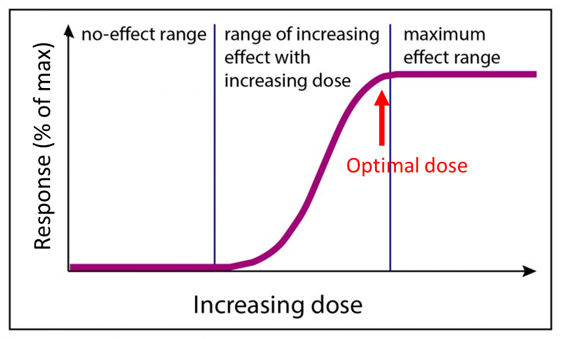
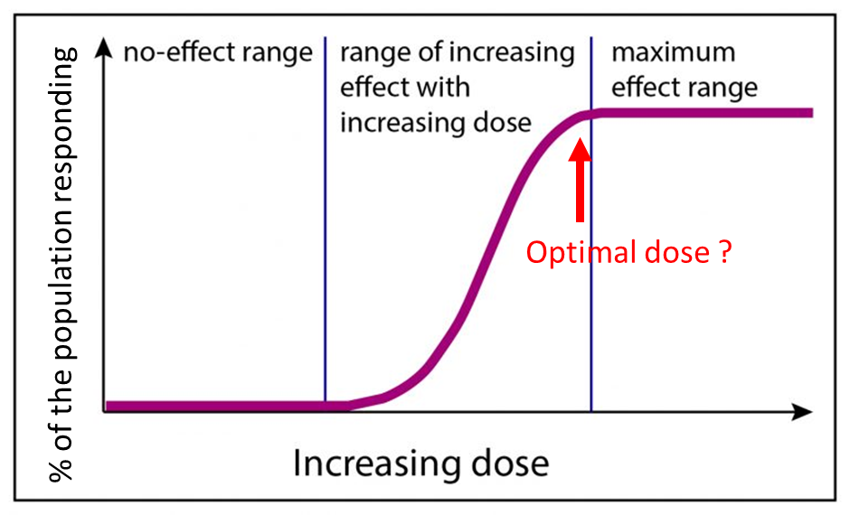
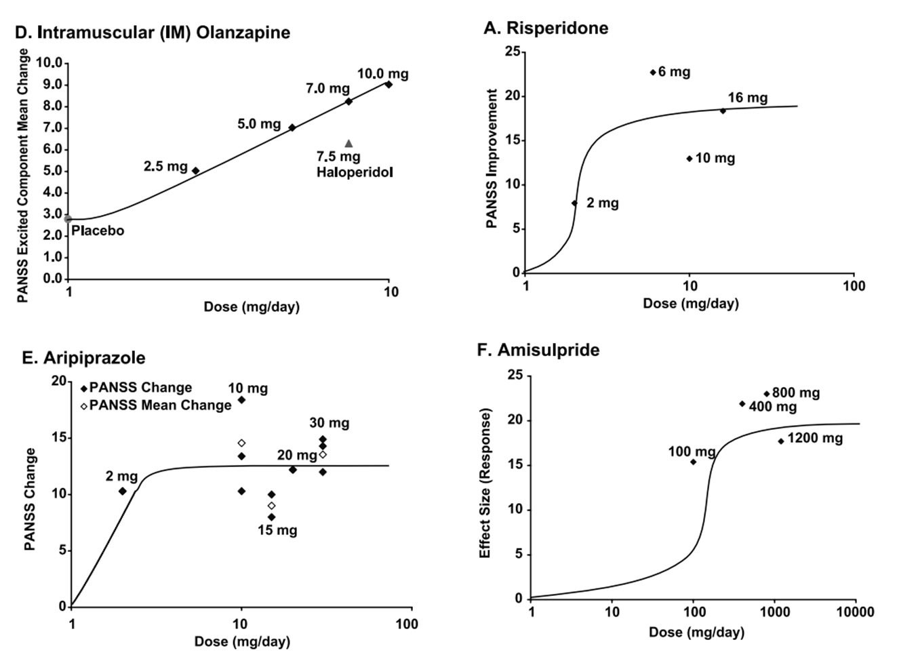
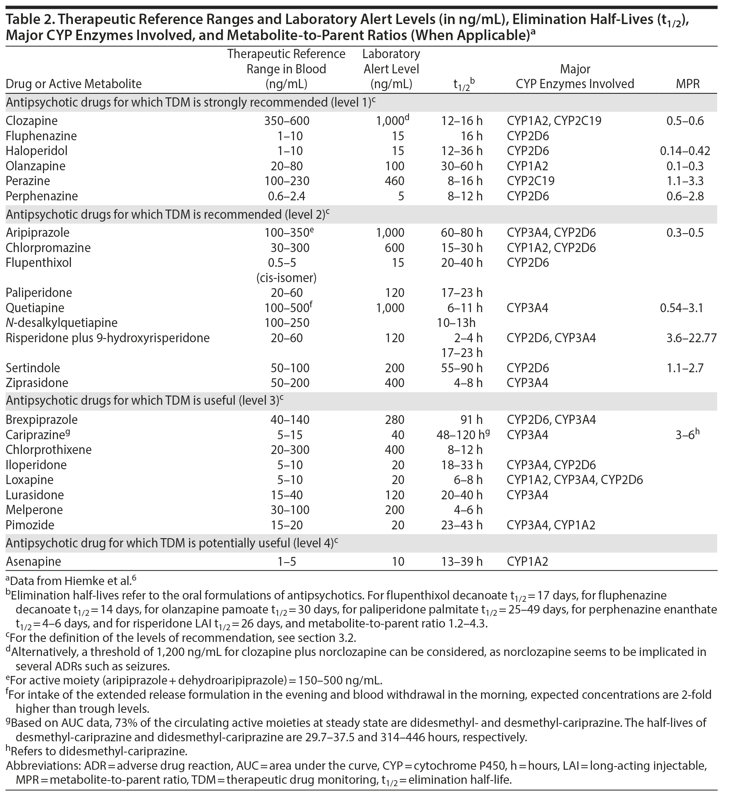
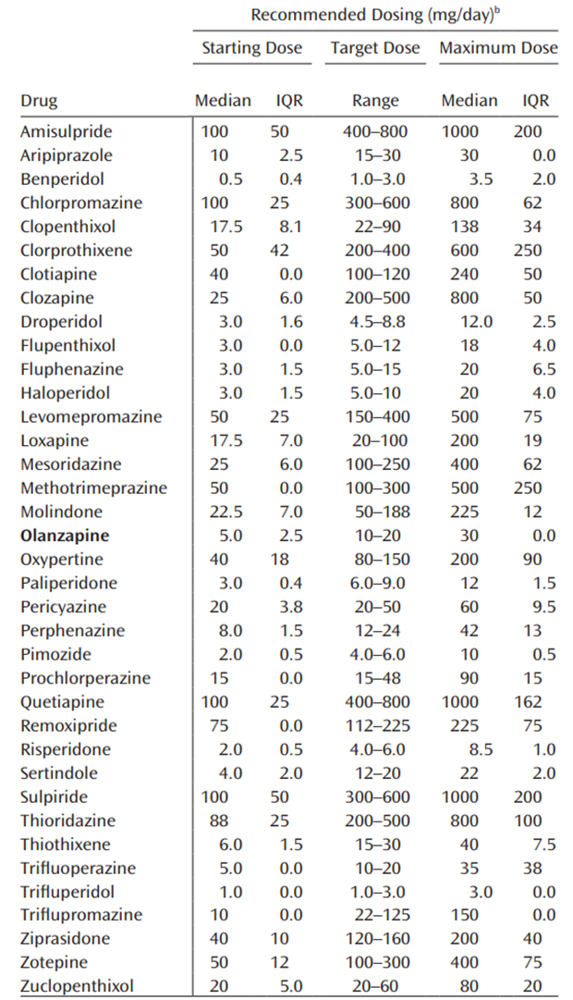
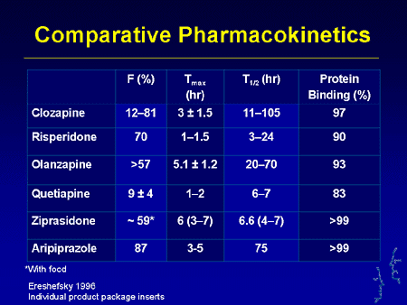
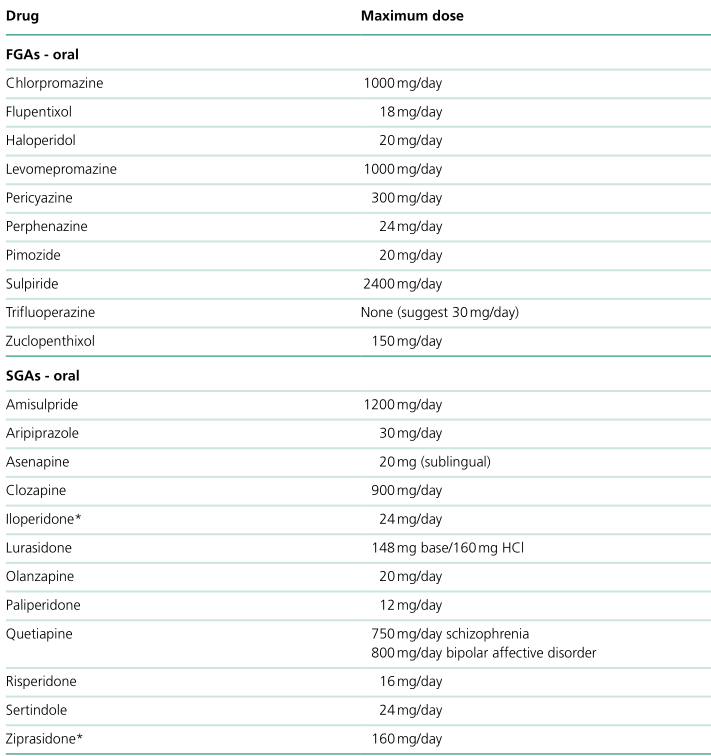
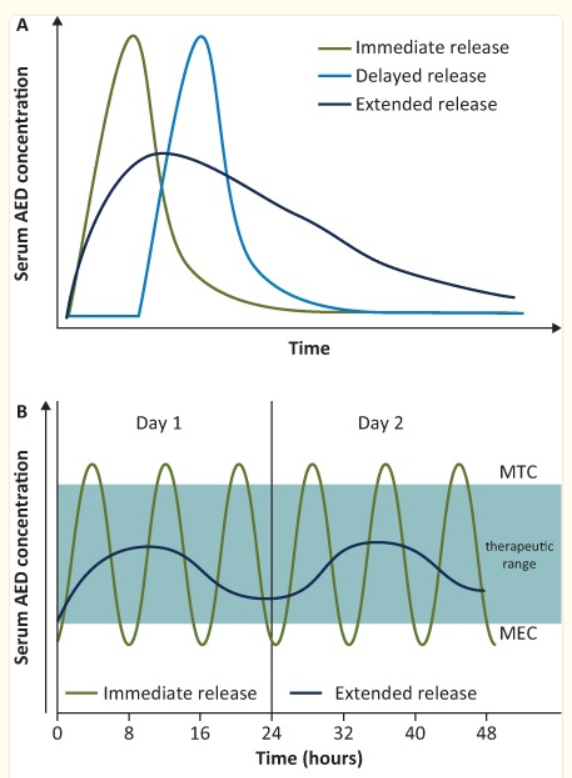

49 용량 결정을 비롯한 제반 문제들
49.1 용량 결정
49.1.1 적정 용량
선택된 약물을 효과적으로 사용하기 위해 가장 중요한 요소는 사용 용량의 결정이다. 이는 약물 선택보다도 더 정해진 지침이 없고, 과학적/합리적 근거가 부실하다. 약동학적 혹은 약력학적 특성 때문에, 개개 환자에 맞는 최적 용량은 다를 수 밖에 없다. 의사는 증량하다보면 조금씩 더 나은 효과가 발현되기 시작하고, 언젠가는 관해에 다다르리라 기대하지만, 관해에 필요한 충분한 용량, 즉 적정 용량(optimal dose)이 있을 뿐이지, 용량을 두배 올린다고 해서 효과가 두배가 되는 것은 아니다. 즉 적정 용량을 사용했음에도 불구하고 효과를 얻지 못했다면, 용량을 늘려도 사정은 마찬가지일 것이라는 뜻이다. 이는 개인의 용량과 반응의 관계를 도식화한 용량-반응 곡선(dose-response curve)을 통해 쉽게 이해할 수 있다.

그러나 도파민 수용체 차단 곡선과 같이 생물학적으로 정의될 수 있고, 객관적으로 수치화될 수 있는 효과에 대해서는 위의 용량-반응 곡선이 타당하지만, 환자를 대상으로 한 임상 연구는 생물학적 변수를 다루는 것이 아니다. 예를 들어 한 환자에서 “가능한 최대 효과의 80~90%가 발휘되고 있다”는 것을 어떻게 정의하고, 어떻게 측정하겠는가? 그렇기 때문에 용량-반응 곡선의 y 축은 다음 그림처럼, “전체 실험군에서 반응한 피험자의 비율(% of the population responded)”로 수정되어야 한다.

즉 용량-반응 곡선은 용량 증가에 따라 반응한 환자의 비율이 얼마나 높아지느냐를 표시하는 것이지, 한 환자에서 얼마나 우수한 효과가 얻어지는지를 뜻하는 것이 아니다. 마찬가지로 적정 용량이라고 표시된 점은 , 이보다 용량을 더 높였을 때 전체 대상군에서 더 이상 반응군의 비율이 변화하지 않는다는 뜻이지, 개개 환자에서 더 효과를 볼 수 없다는 뜻이 아니다.
부족하나마, 임상 시험 자료를 이용하여 한 환자가 각각의 용량에서 얼마나 반응을 보일 지를 수학적 모델링을 시도해볼 수 있다. 2004년 Davis와 Chen[1]은 반복적 연속 근사법(iterative successive approximation)을 이용하여 약물의 용량-반응 곡선을 재구성해보았다. 이에 따르면 올란자핀 주사제처럼 용량-반응이 깨끗한 비례관계를 보이는 경우도 있지만, 나머지 약들은 오차 범위가 너무 커서 적정 용량을 결정하기가 매우 애매하였다.

이렇듯 용량-반응 곡선을 참고해도 개별 환자에 맞는 적정 용량을 미리 알기 어렵다면, 그저 환자에게 직접 써보고 나서 짐작할 수 밖에 없다. 그렇다면, 적정 용량에서 더 용량을 늘리는 것은 의미가 없다는 첫번째 원칙과 모순을 빚게 된다. 더군다나 적정 용량이란 제약사가 권장하고 규제 기관이 승인한 용량을 말한다. 제약사는 약물 개발 단계 중에 적정 용량을 찾는 일련의 임상 시험을 진행한다.1 그러나 1, 2상 임상 시험에서 행해지는 용량탐색 연구는, 소규모 피험자에게 이루어지기 때문에 인종, 민족, 진단, 중증도, 동반 질환 등이 지극히 다양한 개별 임상 상황을 고려하기 어렵다.[3,4] 이런 한계를 넘기 위해 일부 제약사는 위약대조연구와 병행하여, 병행용량 비교연구2를 진행하기도 한다.[5–7] 이 밖에도 용량을 필요에 따라 유동적으로 변동시킬 수 있는 개방 연구를 설계한 후, 사용된 용량이 어느 정도였느냐를 사후에 분석한다.[8,9] 이런 연구결과들은 의사들이 용량을 참고할 때 유용하게 쓰이지만, 여전히 실제 환자 진료에서 갖는 가치는 매우 제한적이다.[3]
1 1상 시험에서 행해지는 것을 용량범위 발견시험(dose-ranging study)이라고 해서, 꽤 넓은 범위의 용량을 여러 피험자에게 투여하여 안전하게 효과를 나타낼 수 있는 범위를 찾는다. 여기서 최대허용용량(maximum tolerated dose, MTD)이 결정된다. 다음으로는 2상 시험에서 적정용량 발견시험(dose-finding study)을 하는데, 피험자 한 사람 한 사람에게 점차적으로 용량을 높여가거나, 정해진 용량을 투여 받은 앞 실험군의 반응을 살펴서 다음 실험군의 용량을 정하는 식으로 용량을 높여나가면서 가장 효과적인 용량을 정한다.[2]
2 병행용량 비교연구(parallel-arm, multiple-dose study): 위약군을 비롯하여, 시험약을 서로 다른 고정 용량으로 투여하는 다수의 실험군에 대해 치료 효과를 비교하는 연구
결국 의사들은 증량 과정에서 시행 착오를 피해가기 어려우며, 항상 지금 사용하고 있는 용량이 부족한 것은 아닌지, 과하지는 않는지 노심초사 할 수 밖에 없다. 제약사가 공시한 용량을 신뢰하지 않는 일부 의사들은 최대 허가 용량을 넘겨 증량해보기도 하지만, 이는 공식적으로 인정되지 않는다.
약물이 임상에 도입된 후 충분한 시간이 흐르면, 의사들이 선호하는 용량의 윤곽이 드러나기 시작하며, 이는 권장 용량과 차이가 날 수 있다. 리스페리돈의 경우 적정 용량은 4~16mg/day 범위이지만, 많은 의사들은 6mg/day 이상 사용하는 것은 추체외로 증상의 급격한 증가때문에 별로 도움이 되지 않는다고 본다.[10] 반면 올란자핀의 경우 최대 용량은 20mg/day이지만, 1997년부터 2006년까지 뉴욕 주립 정신병원에 입원한 환자들을 분석한 결과 20mg/day를 넘겨서 사용한 환자의 비율은 16.2%에서 50%까지 상승하였다.[11] 새로운 약물이 일단 FDA의 허가를 받으면, 그 이후에는 허가 사항 변경을 신청하는 일이 거의 없기 때문에, 임상에서 얻어진 컨센서스가 허가 내용에 반영되기는 지극히 어렵다.3 이런 제도적 허점은 보완될 필요가 있다.
3 허가 내용을 변경하기 위해서는 새로운 대규모 임상시험이 필요한데, 제약사가 이미 허가를 획득한 약물에 대해 비용이 많이 드는 연구를 수행할 경제적 이점이 없다. 더군다나 의약품 특허가 풀렸거나, 곧 풀릴 약물이라면 더더욱 그럴 이유가 없다.
49.1.2 혈중 농도
개인에게 맞는 용량을 확인하는 가장 이상적인 방법은 약물의 작용 부위에서 직접 약물 농도를 확인하는 것이다. 그러나 약물이 작용 부위까지 전달되기까지는 몇가지 관문이 있다. 경구로 복용된 약물은 일단 체순환에 도달해야 하는데, 이는 다행히 혈중 농도로 확인할 수 있다. 다음에는 뇌-혈관 장벽을 통과해야 하는데, 투과도는 약물에 따라, 개인의 P-glycoprotein4 활성에 따라 심하게 차이가 난다.[12] 게다가 뇌-혈관 장벽의 투과성은 증상의 심한 정도에 따라 변화하기 때문에, 한 환자에서도 시시각각 달라질 수 있다. 마지막 관문은 뇌 조직에 도달한 약물이 정해진 작용 부위에 전달되는 것이다. 이는 뇌 조직생검을 통해서만 확인 가능할 것이다. 이렇듯 경구로 섭취되는 약물의 용량에서, 작용 부위에 도달하는 약물의 양 사이에는 워낙 많은 중간단계가 끼워져 있기 때문에, 전자를 통해 후자를 예측하기는 거의 불가능하다. 물론 방법이 아주 없는 것은 아니다. 도파민 수용체 차단율과 반응을 분석한 고전적인 연구[13]에 따르면, 항정신병 약물의 적정 용량은 D2를 65~80% 차단하는 범위이다. (2-7-2 절) 그러나 환자의 D2 수용체 차단율을 확인하려면, 방사성 동위원소를 이용한 PET 촬영이 필요한다.
4 p-glycoprotein: ATP를 사용하는 능동배출을 통해 약물들이 세포막을 통과할 수 있게 도와주며, 반대로 세포 내에서 밖으로 배출시키는 역할을 한다. 뇌-혈관 장벽에도 p-glycoprotein이 있어서 뇌조직으로 스며든 약물을 밖으로 배출시킨다.
부족하나마 가장 현실적인 대안은 혈중 농도를 확인하는 것이다. 합리적인 조현병 치료를 위해서 치료적 약물 모니터링 (TDM)5을 적극 활용해야 한다는 주장은 어제 오늘 나온 이야기가 아니다.[14] Cytochrome 효소 활성은 유전적으로 결정될 뿐만 아니라, 흡연, 질병 등으로 인해 그때마다 변화한다. 게다가 광범위한 약물 상호작용의 영향을 받기 때문에, 매우 유동적이고 예측이 어렵다고 보아야 한다. 과거에는 혈중 농도가 주로 순응도를 확인하는 목적으로 사용되었지만, 최근에는 점점 더 개인과 개인 사이의 대사율 차이를 가늠하기 위해 사용되고 있다. 낮은 용량에서 뜻밖에 부작용이 발생하거나, 충분히 용량을 높여도 치료효과가 나오지 않을 때, 의사들은 약물 자체가 안 맞는 것인지, 투여 용량에 문제가 있는 것인지 확인할 길이 없다. VanderZwaag 등[15]은 용량이 아니라 혈중 농도를 기준으로 실험군을 나눈 후, 각 군의 반응 정도를 비교하여 적정 용량이 아니라 적정 농도를 찾아내었다. 이후 갖가지 항정신병 약물에 대해 유사한 연구가 진행됨으로써, 효과를 최대화하고 부작용을 최소화한 혈중 농도에 대한 지침이 만들어졌다.
5 치료적 약물 모니터링 (therapeutic drug monitoring, TDM): 어쩌고 저쩌고

TDM은 이외에도 소아, 노인, 임산부 등 허가 임상에서 놓칠 수 밖에 없었던 특별한 환자군에 약물을 쓸 때, 간/신기능 저하 환자에게 사용할 때, 급성 감염이나 염증을 앓고 있을 때, 소화기 장애로 약물의 적절한 흡수가 의심될 때, 약물을 교체할 때 등 다양한 임상 상황에서 단서를 구하기 위해 사용된다.
물론 TDM이 한계와 단점이 없는 것은 아니다. 유효한 농도 범위가 제시되었다 하더라도, 혈중 농도와 치료 반응 사이에 상관 관계가 확인된 약물은 클로자핀과 할로페리돌을 비롯한 일부 약물에 불과하다. 비용 및 장비 문제로 워낙 소수의 환자에게만 TDM이 적용되고 있기 때문에, 데이터가 축적되기 힘들다. 현실적으로 TDM이 자리잡으려면 각 병원 진단검사의학과마다 참조치(reference value)가 정해져야 하는데, 데이터가 축적되지 않으니 갈 길이 요원하다. 또 다른 단점으로, 부분 순응을 파악하기 위해서 생각보다 TDM이 제 역할을 못한다. 혈중 농도가 거의 0에 가깝다면 완전한 비순응을 확인하기 쉽지만, 예상보다 낮게 나오면 부분 순응때문인지 환자의 약동학적 특성때문인지 확인할 길이 없다. 이러한 한계들은 좀더 경험이 쌓이고, 데이터가 축적된 후에나 해결책을 모색할 수 있을 것이다.
49.1.3 등가 용량
등가 용량(equivalent dose)은 환자가 현재 복용하고 있는 항정신병 약물의 총 투여량을 어림할 때 사용되는 방법이다. 만약 리스페리돈 6mg/day와 퀘티아핀 150mg/day를 함께 복용하고 있는 환자와, 올란자핀 20mg/day를 단독으로 복용하고 있는 환자가 있다면, 누가 더 고용량의 약을 먹고 있을까? 이런 식의 질문에 답하기 위해서는 등가 용량 전환을 해보아야 한다. 또한 약물을 교체할 때도 반드시 필요한 개념이다. 이전 약에서 다음 약으로 전환할 때, 다음 약물의 용량을 정하기 위해서는 등가 용량을 참조해야만 한다. 연구 차원에서도 다양한 항정신병 약물의 용량을 하나의 표준 단위로 묶을 수 있다면, 역학 조사는 물론 약물 간의 효과 및 안정성을 비교하는 연구가 가능해진다. 특히 맞대결 비교임상시험(head-to-head)이 늘어나면서, 서로 다른 약을 공정하게 비교하기 위해 등가 용량의 중요성이 더욱 강조되었다.
등가 용량의 개념을 처음 제안한 학자는 Davis6로 그는 클로르프로마진 100mg/day에 해당하는 타 약물의 등가 용량을 제안하였다.[16] 이후 클로르프로마진을 기준으로 하는 것이 정례화되었고, 비정형 약물 시대에도 여전히 기준으로 사용되었다. 하지만 때때로 리스페리돈, 올란자핀이 기준 역할을 대신 맡기도 하였다.
6 John Marcell Davis (1933~): 시카고 소재 일리노이 주립대학 정신건강의학과 교수로, 70년대 당시 항정신병 약물이 필요 이상으로 고용량 사용되고 있음을 지적하였다. 정신과 역사상 최초의 메타 연구를 지휘하였으며, 약물의 대사과정에 대해서도 많은 연구업적을 남겼다.
그런데 문제는 등가 용량을 어떻게 결정하느냐이다. 몇가지 방법이 있으나 모두 문제점이 없지 않다.[17] 가장 기본적인 방법은 각 임상 시험에서 사용된 용량을 조사한 후, 표본수에 따른 가중평균값을 구하여, 이를 기준으로 등가 용량을 정하는 것이다.[18] 즉 임상 시험에 사용된 용량이 적정 용량이라고 간주하는 것이다. 그러나 제약사가 임상 시험에서 어떤 용량을 사용했는지는, 과학적 근거뿐 아니라 제약사의 사정에 의해서도 영향을 받는다. 유사한 방법으로 최소 유효 용량, 근접 최대 유효 용량7을 서로 비교하는 방법이 있다. (아래 “최소 유효 용량과 근접 최대 유효 용량” 절 참조) 둘다 평균 사용 용량보다는 과학적 의미를 지니지만, 역시 제약사의 접근 방침에 따라 영향을 받을 수 있으며, 약물에 따라 필요한 자료가 갖춰지지 않은 경우가 많다.[18]
7 영국의 British National Formulary (BNF)는 항정신병 약물의 최대 허가 용량을 등재하고 있다. https://bnf.nice.org.uk 이를 기준으로 하여 현재 항정신병 약물의 사용량을 BNF로 나눈 분율(%BNF)을 등가 용량으로 쓰기도 한다.
이 밖에 경험많은 정신과 의사에게 설문을 돌려 의견취합 방식으로 등가 용량을 정하기도 한다.[3] 이는 약물 전환 사례를 충분히 경험해 본 전문가로부터, 실제 경험을 듣는 것으로 시작하기 때문에 경험과 지혜를 모은다는 의미가 있으나, 개인의 편향때문에 합의점에 도달하기 어렵다.
한편 WHO에서 권장하는 방법8은 일일상용량9을 비교하는 것이다.일일상용량이란 주요 적응증에 대해 체중 70kg의 성인이 매일 복용해야 하는 평균 유지용량으로 정의된다. 기준은 자의적으로 정할 수 있는데, 예를 들어 올란자핀의 일일상용량은 10mg이고, 아리피프라졸은 15mg라면, 올란자핀 1mg에 상응하는 아리피프라졸의 등가 용량은 1.5mg이 된다.
8 정확히는 WHO Collaborative Center for Drug Statistics Methodology에서 표준으로 정한 방법이다. 이 단체는 정기적으로 ATC/DDD index를 발간하며, 여기에는 정신과 약물 뿐 아니라 다양한 약물의 일일상용량(defined daily dose, DDD)이 개시된다.
9 일일상용량(defined daily dose, DDD): 각 제약사는 WHO에 DDD를 등록시킨다. 이때 필요한 자료는 허가 용량 및, 임상 시험에 사용된 용량, 시장 조사를 통해 얻은 평균 사용량, 비교임상시험 자료 등이며, WHO는 이를 주기적으로 평가하여 DDD를 정한다.
이 방법은 전세계적으로 인정받은 공식 데이터를 기준으로 하며, 대부분 항정신병 약물에 비교할 자료가 존재한다는 면에서 장점이 있으나, 유지 치료를 기준으로 하기 때문에 급성기 약물의 역가를 비교하기는 어렵다. 또한 일일사용량은 그 시대의 학문적 흐름에 따라 변화할 수 있기 때문에 이를 바탕으로 등가 용량을 정한다는 것은 어폐가 있다. 예를 들어 정형 약물 시대에는 고용량을 쓰는 것이 보편적이었고, 비정형 약물 시대에는 용량을 낮춰 쓰는 것이 유행이었으므로, 자연히 정형 약물에 대한 비정형 약물의 등가 용량은 낮게 책정될 수 밖에 없다.[19] 게다가 성별, 인종, 국가간 사용량의 차이를 고려하지 않은 수치이기 때문에, 한국인에게 일괄적으로 적용하는데 문제가 있다.
| Name | Equiv. dose |
|---|---|
| First Generation Antipsychotics | |
| Chlorpromazine | 100 mg |
| Fluphenazine | 2 mg |
| Haloperidol | 2 mg |
| Loxapine | 10 mg |
| Perphenazine | 8 mg |
| Pimozide | 2 mg |
| Prochlorperazine | 15 mg |
| Trifluoperazine | 2-5 mg |
| Thioridazine | 100 mg |
| Thiothixene | 4 mg |
| Second Generation Antipsychotics | |
| Aripiprazole | 7.5 mg |
| Asenapine | 4 mg |
| Clozapine | 100 mg |
| Iloperidone | 3-4 mg |
| Lurasidone | 16 mg |
| Olanzapine | 5 mg |
| Paliperidone | 2 mg |
| Quetiapine | 75 mg |
| Risperidone | 1 mg |
| Ziprasidone | 60 mg |
49.1.4 최소 유효 용량과 근접 최대 유효 용량
최소 유효 용량(minimum effective dose, MED)은 적어도 하나 이상의 고정 용량 위약대비 무작위 배정 임상시험에서, 위약에 비해 유의한 효과를 나타낸 최소 용량으로 정의된다.[20] 개인마다 적정 용량은 차이가 나더라도, 최소 유효 용량은 크게 다르지 않다. 따라서 조금이라도 효과를 기대하려면, 적어도 이 정도 용량을 써야한다는 하한선으로 여기면 될 것이다. 현재 제시되고 있는 최소 유효 용량은 표 __와 같다. 물론 재발 삽화에서는 이보다 좀더 최소 유효 용량이 높아진다.
이와 대조되는 근접 최대 유효 용량(near maximal effective dose, NMED)은, 이 용량보다 더 올려도 그다지 더 나은 효과를 기대할 수 없는 용량의 상한선을 말한다. 임상 시험에서 얻어진 용량-반응 곡선을 살펴보면, 일정 구간을 지난 후 고원(plateau)에 다다르기 때문에 더 이상 반응군의 비율이 높아지지 않는다. Leucht 등[21]은 예상할 수 있는 약물 최대 효과의 85~95%를 내는 용량을 근접 최대 유효 용량으로 정의한 후, 각 약물에 대해 이 값을 제시하였다.(표__) 그의 주장에 따르면 이 용량을 넘겨 사용하는 것은 극히 일부 환자에게만 이득을 가져올 것이며, 대부분의 환자에게는 무익할 뿐더러 오히려 부작용만 키우는 결과를 초래할 것이다.
| Antipsychotic | MED (mg/day) | ED95 (mg/day) |
|---|---|---|
| amisulpride | 536.94 | |
| aripiprazole | 10 | 11.5 |
| asenapine | 10 | 14.97 |
| brexpiprazole | 2 | 3.36 |
| cariprazine | 1.5 | 7.63 |
| chlorpromazine | 200 | |
| clozapine | 300 | |
| haloperidol | 4 | 6.33 |
| iloperidone | 8 | 20.13 |
| lurasidone | 40 | 147.03 |
| olanzapine | 7.5 | 15.17 |
| paliperidone | 3 | 13.35 |
| quetiapine | 150 | 482.08 |
| risperidone | 2 | 6.26 |
| ziprasidone | 40 | 186.39 |
49.1.5 성별, 인종에 따른 차이
적정 용량, 등가 용량, 최소 유효 용량, 근접 최대 유효 용량 등의 개념은 모두 용량을 결정할 때 귀중한 가이드가 되지만, 이들은 어디까지나 평균 추정값이라 개개 환자의 특수성에 적용하기가 곤란하다. 특히 임상에서 문제가 되는 것은 남성과 여성에게 필요한 용량이 다르며, 서양인을 대상으로 수집된 권장 용량, 유효 용량이 한국인에게 잘 맞지 않을 수 있다는 것이다. 이는 약동학 뿐만 아니라 약력학적 차이까지도 영향을 미친다. 예를 들어 올란자핀의 제거율(elimination rate)은 개인에 따라 무려 10배까지 차이가 나는데, 전체 변량(variance) 중 흡연, 성별, 인종이 각각 26%, 12%, 7%를 차지하였다.[22] 동일한 용량을 사용했어도, 여성은 남성에 비해 아미설프라이드의 혈중 농도는 71.9% 높았으며, 아리피프라졸은 55.8% 더 높았다.[23] 여성은 체중과 키를 감안하더라도 남성에 비해 낮은 용량이 필요하며, 부작용에 대한 취약성도 큰 편이다. 게다가 월경 주기에 따라 약물 대사가 들쑥날쑥 변화하므로, 일정한 농도를 확보하기 어렵다.[24]
성별은 약력학에도 영향을 미쳐, 동일한 혈중 농도를 유지한다 하더라도 남녀간에 효과와 부작용이 달리 나타날 수 있다. D2 수용체를 65~80% 차단하는 것이 이상적이라 할 때, 여성은 훨씬 적은 용량으로도 이 목표에 도달한다. 예를 들어 올란자핀을 투여하여 D2 수용체를 70% 이상 차단하기 위해선, 남성은 20mg/day가 필요한데 비해 여성은 그 절반인 10mg/day면 충분하다.[25] 이런 식으로 탐색하다보면, 다른 항정신병 약물도 역시 성별에 따라 목표 용량을 재조정해야할 필요성이 드러날 것이다. D2 수용체, 도파민 운반체, 5-HT1A 수용체 등의 농도 역시 성별에 따라 확연히 다르며, 월경 주기, 성호르몬 농도에 따라 요동친다.[26] 이러한 차이가 여성이 항정신병 약물에 더 잘 반응한다는 것을 뜻하는지, 단지 부작용에 예민하다는 것을 의미하는지는 두고봐야 알겠지만, 변함없는 사실은 여성은 남성보다 용량을 적게 써야한다는 것이다.[27,28]
약물 반응과 인종의 관계는 좀더 복잡하다. 일단 인종에 따라 cytochrome 변이의 구성비가 크게 다르기 때문에, 동일 용량에 대해서도 혈중 농도가 달라진다. Cytochrome 2D6의 초신속대사형(ultra-rapid metabolizer)10의 빈도는 유럽인에서는 2~3%에 지나지 않지만, 동부 아프리카인에서는 20~30%에 달한다.[29] 과거부터 임상 경험을 통해 우리나라를 비롯한 동북부 아시아인들은 서양인보다 용량을 낮추어 사용해야 한다는 보고가 많았다.[30,31] 특히 클로자핀은 cytochrome 1A2와 2C19의 영향을 많이 받는데, 동양인은 지연대사형이 많기 때문에 서양인보다 훨씬 낮은 용량에서 반응하며, 동일한 용량에도 부작용이 심하게 나타난다.[32] 이 때문에 많은 의사들은 서양인에 비해 동양인은 클로자핀 용량을 약 20% 정도 낮추어 사용할 것을 권하고 있다.[3]
10 Cytochrome 2D6에는 100가지 종류가 넘는 변이가 있으며, 이 변이의 구성비에 따라 대사 속도가 결정된다. 편의를 위해 개인의 대사 특성을 다음과 같이 구분한다. 1) 지연대사형(poor metabolizers, PM), 2) 중간대사형 (intermediate metabolizers, IM), 3) 정상대사형 (normal metabolizers, NM), 4) 초신속대사형 (ultrarapid metabolizers, UM)
49.1.6 시대적 추세와 개인적 성향
의사가 용량을 결정하는데 영향을 미치는 요인은, 허가 용량이나 축적된 연구 결과 등 객관적인 지표에 그치지 않는다. 시대적 추세와 의사 자신의 성향에 따라 용량이 달라질 수 있다는 것은, 의사들 스스로는 인정하고 싶지 않겠지만 부인할 수 없는 사실이다. 항정신병 약물 도입 초반기에는 “많을수록 좋다”는 분위기가 조성되었고, 이에 부응하여 급속 정온요법(rapid tranquilization), 고용량 치료(high dose therapy) 및 초고대용량 치료(very high dose therapy)가 앞다투어 시도되었다.[33–35] 80~90년대를 거쳐 환자들 자신의 목소리가 높아지면서, 고용량 치료는 유행에서 뒤쳐지게 되었고, 역으로 어떻게든 약을 조금만 사용하는 것이 미덕으로 자리잡았다.[36–38] 병용 치료를 백안시하던 서구 정신의학계도, 항정신병 약물의 용량을 높이는 것 보다는, 벤조디아제핀 등 병용 약물을 넉넉히 사용함으로써 제반 증상을 조절하는 치료법을 받아들이게 되었다. 이러한 변화는 현재까지도 저용량 치료를 강조하는 분위기로 몰아갔다.[4] 이제는 저용량 치료(low-dose therapy)는 물론이고 초저용량 치료(very low-dose therapy)라는 개념까지 등장하였으며[39,40], Leucht 등[38]은 등가 용량으로 리스페리돈 5mg 이상 사용하는 것은 재발 방지에 득이 될 것이 없다고 못 박기도 하였다.
그러나 실제 임상가들 사이에서는 “충분한” 용량을 써야만 최적의 효과를 볼 수 있다는 의견도 사라지지 않았으며[41], 공식 석상에서는 저용량 치료가 옳다고 찬동하면서도, 실제로 자신이 맡은 환자들에게는 용량을 점점 높게 사용하는 경향도 발견할 수 있다.[42–44] 저용량 치료를 강조하다보니, 대신 다약제 처방이 늘어서 전체 투여량으로 따지면 결국 고용량을 쓰는 것과 마찬가지인 웃지 못할 상황이 되어버리기도 하였다.[45]
이러한 현실을 의사들의 이중성이라고 비난하기 보다는, 이론과 현실 사이의 메울 수 없는 간극이라고 받아들여야 할 것이다. 이렇게 정해진 답이 없는 상황에 의사의 개인적 성향까지 가미되면, 더더욱 표준 치료와는 거리가 먼 납득하기 어려운 치료도 등장하게 된다. 위험을 무릅쓰더라도 좀더 공격적인 치료를 하고 싶어하는 의사가 있는 반면, 환자에게 해를 끼쳐서는 안 된다는 원칙을 무엇보다 앞세우는 의사도 있을 것이다.
허가 용량이나 논문에서 말하는 적정 용량이란 단지 지침일 뿐이지, 의사들의 자유로운 처방권을 침범하는 것은 아니다. 또한 평균값은 어디까지나 평균일 뿐이고 개개 환자들에게 적용되는 것은 아니기 때문에, 한 환자에게 맞는 용량은 평균값과는 동떨어져 있을 수 있다. 그럼에도 불구하고, 항상 자신의 처방 패턴을 되돌아보고 동료와 비교하며, 시대의 흐름이 얼마나 과학적 증거를 반영하는지 점검하는 것은 덕목이 아니라 의무일 것이다.
49.2 용량 적정
49.2.1 용량 적정의 과정
급성 삽화를 조절하기 위해 항정신병 약물을 투여하기 시작할 때, 첫날부터 타겟 용량을 한꺼번에 투여할 수는 없다. 첫날에는 권장되는 초기 용량을 투여한 후, 효과와 부작용을 살펴가면서 타겟 용량에 이를 때까지 점진적으로 올리는 것이 보통이다. 아직 약물에 노출되어 본 적이 없는 환자에게 새로운 약물이 투여되면, 신체가 원만하게 적응할 때까지 부작용 위험이 매우 높기 때문이다. 또한 개인에게 가장 적절한 용량을 미리 알 수 없는 상황에서, 용량 적정(dose-titration)은 부작용은 최소화하면서 효과를 최대화하는 용량을 조심스럽게 찾는 과정이기도 하다. 용량 적정에는 처음 약을 쓸 때 증량(up-titration)하는 과정뿐만 아니라, 재발 위험을 최소화하면서 감량(down-titration)하는 과정, 약물을 바꾸기 위해 교차 적정(cross-titration)하는 과정도 아우른다.
용량 적정, 특히 증량 과정에서 신경을 써야할 사항들은 증량 속도, 투여 간격, 증량 주기, 그리고 타겟 용량 등이다. 추체외로 증상, 프로락틴 증가, 체중 증가, 인지기능 저하 등은 용량의존적이다.[46] 한편 클로자핀의 대표적 부작용인 진정 작용, 기립성 저혈압, 경련 등은 용량 뿐 아니라 증량 속도에 영향을 받는다. 따라서 치료 지수11가 좁아 부작용 위험이 큰 약물은, 시간을 넉넉히 두고 천천히 증량할 필요가 있다. 투여 간격은 하루 몇 번 복용하느냐를 의미하는데, 최대 농도에 도달하는데 걸리는 시간 (Tmax)과 반감기(T1/2)를 고려하여 결정한다. 대체로 투여 초기에는 하루 2번 분복하다가, 어느 정도 시간이 지나면 하루 한번으로 전환하는 것이 보통이다. 증량 주기란 며칠마다 용량을 올릴 것이냐를 뜻한다. 효과와 부작용 여부를 살펴보면서 한단계씩 증량하는 것이 원칙이겠지만, 약물의 특성 상 오늘 용량을 변화시켰다고 해서 내일 그 효과가 나타나는 것이 아니기 때문에, 매일 혹은 이틀 간격으로 증량하는 것이 보통이다. 마지막으로 증량 과정을 마무리하는 것은 역시 타겟 용량이다. 모든 환자에게 처음부터 근접 최대 유효 용량(NMED)까지 올리는 것은 아니다. 환자에 따라서 더 낮은 용량에서도 충분한 효과를 볼 수 있기 때문에, 일차 타겟 용량은 NMED보다 훨씬 낮은 수준에서 설정되며, 일단 타겟 용량에 도달하면 몇 주 기다렸다가 반응 여부를 보아 다시 용량을 조절하게 된다. Maudsley 지침서에서는 일차 타겟 용량을 최소 유효농도(MED)로 권하고 있지만, 의사들은 보통 MED와 NMED 사이의 어느 정도 선을 목표로 잡는다. 2010년에는 18개국으로부터 참가한 43명의 정신과 의사의 견해를 물어 작성한, 전문가 합의에 의한 지침(International Consensus Guideline)이 발표되었다.[3] (표 __) 여기서 살펴본 타겟 용량은 MED보다는 상당히 높은 수준이다.
11 치료 지수 (therapeutic index): 집단의 50%에서 독성을 나타내는 용량(TD50)을 집단의 50%에서 효과를 나타내는 용량(ED50)으로 나눈 값. 치료 지수가 낮다 혹은 좁다라고 묘사되는 약물은 유효 용량에서 조금만 벗어나도 독성을 보이기 때문에 용량 적정과정이 매우 조심스럽다.

환자에게 가해질 피해를 최소화하고, 순응도에 문제가 생기지 않게 조심하려면 무조건 천천히 증량하면 될 것이다. 개인의 약동학적 특성이나 약물 상호작용에 영향을 많이 받는 약물, 유효 농도의 범위가 넓어 적정 용량을 결정하기 어려운 약물은 그만큼 시간이 걸린다. 예를 들어 클로자핀의 용량 적정 기간은 2~3주가 넘게 걸릴 수도 있다. 게다가 조급하게 증량하는 것은 순응도를 떨어뜨리는 중요한 요인이 되기도 한다. 한편 정신병의 급성 삽화는 오래 끌면 끌수록 반응이 나빠지며, 신속히 환자를 조절하지 않으면 환자 본인은 물론 주변 사람들이 겪을 피해와 고통이 너무 커진다. 이 때문에 대부분의 치료 가이드라인은 부작용만 없다면 최대한 빨리 증량하는 것을 권장한다. 게다가 최근에는 재정적 압박으로 말미암아, 점점 더 재원 기간이 단축되고 있으니, 용량 적정 과정에 너무 많은 시간을 잡아먹으면 곤란하다.[47] 한 연구에 따르면 퇴원할 때까지 걸린 시간은 평균적으로 용량 적정에 걸린 시간의 3배 정도라고 한다.[48] 이처럼 안전과 효용성이라는 서로 대립되는 제약 속에서, 최대한 빠른 증량 속도를 결정하는 것은 정녕 과학이자 예술이라 할 수 있다.[49,50]
많은 약들의 사용설명서에는, 첫날부터 유효 용량을 하루 한번 투여해도 무방하다고 적혀있다. 그러나 이를 임상에 곧이곧대로 적용할 수 있을 지는 의문이다. 예를 들어 아리피프라졸은, 아무런 적정 과정없이 첫날부터 유효 용량인 10~15mg을 하루 한번 투여해도 된다고 적혀있다. 그러나 임상 의사들은 이렇게 처방했다가는 용량의존적으로 나타나는 좌불안석때문에, 일부 환자가 심각한 고통을 겪게 된다는 것을 잘 알고 있다. 그래서인지 의사들이 나름대로 의견수렴을 거쳐 새로운 지침을 발표하기도 하는데, 예를 들어 영국 의사들이 내놓은 지침에 따르면, 아리피프라졸을 초회 용량 10mg에서 타겟 용량 15mg까지 증량하는데는 적어도 2주의 간격을 두는 것이 바람직하다.[51]
제약사가 매우 구체적인 증량 스케줄을 제시하는 경우도 있다. 예를 들어 리스페리돈은 한 때, 첫날 1mg 하루 두번, 둘째 날 2mg 하루 두번, 셋째 날 3mg 하루 두번이라는 명확한 증량 스케줄을 따르도록 권고되었다. 그러나 역시 많은 의사들이 이보다 속도를 늦춰야 한다는 견해를 제시하였고, 현재는 약품 설명서에 구체적 증량 스케줄이 삭제되어 있다. Iloperidone도 투여 첫날 1mg 하루 두번으로 시작한 후, 매일 2mg 씩 올려, 7일 차에는 12mg/day 하루 두번에 도달하라는 매우 구체적인 스케줄을 제시하고 있다. 그런에 iloperidone에 대한 임상 경험이 아직 부족하여, 이런 스케줄이 현실적인지는 단언하기 어렵다.

49.2.2 투여 횟수
모든 약물은 최대한 하루 중 투여 횟수를 줄이는 것이 미덕이라고 여겨진다. 투여 횟수가 많아 처방이 복잡해질수록 순응도가 떨어지며, 치료가 실패할 가능성이 높다. 또한 대부분의 항정신병 약물은 Tmax와 T1/2가 길기 때문에 이론적으로 하루에 두번 이상 나눠서 투여할 필요가 전혀 없다. (표 __)
그러나 특히 투여 초기에는 하루 두번으로 나눠서 처방할 때가 많다. 약물의 부작용은 특히 최대 농도(peak concentration)에서 나타날 위험이 높다. 아무래도 나눠서 복용하는 것이 최저 농도와 최대 농도의 차이를 줄이는데 유리하기 때문에, 환자가 조금씩 부작용을 호소한다면 두번으로 나눠서 투여한다. 예를 들어 클로자핀은 유달리 진정 작용, 기립성 저혈압 등 용량의존성 부작용이 많기 때문에, T1/2이 꽤 긴데도 불구하고 용량 적정기에는 반드시 두번으로 나눠서 투여한다.
어떤 환자들은 약물의 혈중 농도가 떨어질 때쯤 조금씩 증상이 드러나기도 한다. 즉 저녁에 한번 투여하는 환자가, 꼭 다음 날 오후 늦게 증상이 악화된다면 혈중 농도의 하락을 의심할 수 있다. 항정상태(steady state)에 도달하기까지는 T1/2의 다섯배의 시간이 걸리므로, 투약을 개시한 지 꽤 오랫동안 항정상태에 도달하지 못했다고 보아야 한다. 따라서 투여 초기에는 약물 농도 요동의 폭이 꽤 큰 편이다. 리스페리돈, 퀘티아핀, 지프라시돈이 상대적으로 이런 문제가 흔한데, 이는 아무래도 Tmax와 T1/2(반감기)가 짧기 때문으로 생각된다. 이에 제약사들은 Quetiapine XR 및 OROS 기술12을 이용한 Paliperidone ER (Invega®)로 제형을 개량하여, 하루 한번 복용만으로도 충분하도록 만들었다. 한편 클로자핀과 퀘티아핀은 약력학적으로도, D2 수용체에 결합했다가 신속히 해리되는 성질(6-3-3-1 장 참조)을 지니고 있기 때문에, 하루 두번 나눠서 투여하는 것이 유리하다.
12 ORal Osmotic System) technology (OROS®): 캡슐 내의 약제가 장시간 동안 일정한 속도로 방출되게 만드는 약물제형 기술이다. 캡슐 내에 약물이 채워진 층(drug layer) 이외에 polymeric osmotic push layer가 포함되어 있다. 캡슐이 위장에 들어가 물을 흡수하면 push layer가 천천히 팽창하기 시작하며, 이는 drug layer를 압박하여 약물이 캡슐 한쪽에 뚫려있는 delivery orifice로 서서히 방출된다.
49.2.3 용량 적정을 마친 후
항정신병 약물의 반응은 투여하자마자 나타나지 않는다. 게다가 개별 증상에 따라 반응이 나타나기 시작하는 속도가 다를 수 있다. 예를 들어 흥분과 공격성은 일찌기 효과를 보이지만, 망상과 환청은 좀 더 후에, 음성/인지 증상은 그야말로 수개월 혹은 수년 후에나 효과가 나타난다. 따라서 타겟 용량까지 용량 적정을 마친 후, 다음 임상 결정을 내리기까지 얼마나 오래 기다려야 할 지 막연할 수 밖에 없다. 이는 의사들마다 대답이 다른데, 한 설문 조사에서는 투여 개시 후 평균 3주 후에 결정한다고 집계되었다.[52] 그러나 설문에 참여한 의사들의 반응은 들쑥날쑥이었고, 과학적 근거보다는 근무하고 있는 병원의 퇴원 일수 제한과 더 밀접한 연관을 보였다.
만약 3주 정도에 퇴원을 시켜야하는 병원이라면, 용량 적정에 최소 1주일이 걸린다고 가정했을 때, 입원 2주 째에는 다음 단계를 고민해야 한다는 뜻이 된다. 즉 현대 의료 체계에서 충분히 반응을 기다려볼 시간적 여유는 없는 것 같다. 이때 취할 수 있는 대안은 증량, 다른 항정신병 약물의 추가(add-on), 아니면 약물을 아예 교체하는 것이다. 많은 임상 연구들은 적정 용량보다 더 용량을 높여봤자 별 도움이 되지 않는다는 실망스런 결론을 내린다. 물론 이는 평균적 결과일 뿐으로, 분명 일부 환자들은 용량을 높였을 때 극적인 반응을 보이기도 한다. 따라서 현재 용량이 아직 최대 허가 용량(표 __)에 이르지 못했다면, 교체를 결정하기 전에 먼저 증량을 시도해볼 것이다. 물론 이는 효과가 부족할 때 해당되는 것이고, 심한 부작용이나 환자의 선호도가 문제되는 경우에는 즉각 약물을 교체해야 한다.

느긋하게 기다리지 못하는 의사라면 좀더 발빠르게 대처하고 싶어질 것이다. 임상 시험을 진행해본 연구자라면, 첫 2주 동안 체감할 수 있는 호전을 경험한 환자들은 종료 시점까지 임상 시험을 무사히 마치며, 그렇지 못한 환자들은 중도 탈락한다는 것을 경험적으로 알고 있다. 첫 2주 동안 반응이 시원치 않았던 환자는, 나중에 조금 나아진다고 해도, 처음부터 반응이 좋았던 환자를 따라잡지 못한다. 약물이 잘 맞느냐 안 맞느냐를 떠나서, 초반에 효과가 있었던 환자는 치료를 신뢰하여 순응도가 높아지며, 의사와의 관계도 돈독해진다.[53] 따라서 의사로서는 어떻게든 빨리 환자가 약물의 효과를 체감할 수 있도록 해야, 이후에도 성공적으로 환자를 이끌어갈 수 있다. 그러기 위해선 전망이 불투명한 약물은 과감히 교체해야만 한다.
한동안 풍미했던 “지연 반응 가설(delayed response hypothesis)”[54], 즉 약물을 투여한 지 적어도 2~3주는 지나야 효과가 나타난다는 가설에 대응하여, 최근에는 반응을 보일 환자는 처음부터 다르다는 “조기 반응 가설(early onset hypothesis)”이 점점 더 힘을 얻고 있다.[[55]; [56]; [57]] 교과서에는 어떤 약물이 실패냐 아니냐를 판가름하기 위해 적어도 4~10 주를 기다릴 것을 제안하지만, 점점 이러한 결정이 빨리 이루어지고 있다. 약물 반응도 생각보다 일찍 드러나고, 용량을 올려도 별 차이가 없다면 일찌감치 병용 투여나 약물 교체를 고려하는 것이 옳을 지도 모른다.
유사한 맥락에서 첫번째 약물에 실패했다면 바로 클로자핀으로 갈아타라는 매우 과격해보이는 주장이 점점 더 학자들간에 호응을 얻고 있다.[58–60] 이들의 견해는 치료저항성 환자는 독립된 아형이라, 치료를 시작하기 전부터 이미 정해져있다는 가설에 기반하고 있다.[61] 따라서 만약 환자가 치료저항성 환자일 것 같다면 최대한 빨리 클로자핀으로 치료하는 것이, 향후 예후를 조금이나마 낫게 하는데 도움이 된다는 것이다.
49.2.4 최대 허가 용량과 고용량 치료
모든 약물은 최대 허가 용량(MLDD, maximum licensed daily dose)이 정해져 있어서, 이보다 더 높은 용량으로 사용하는 것은 허가 외(off-label) 처방이다. MLDD는 의약품의 효능과 안전성을 기준으로 제약사가 정하며, MLDD 이상의 용량으로 처방한다는 것은 허가 외(off-label) 처방이 되기 때문에 정당한 근거가 있고 문서로 남겨져야 한다.
정형 약물의 허가 용량범위는 매우 넓었다. 할로페리돌의 경우 과거 영국에서 허가한 최대 용량은 120mg였다.[[62]]13 적정 용량이 7.5~10mg 정도라고 했을 때, 상당히 높은 용량이다. 이에 비해 비정형 약물의 MLDD는 상당히 낮은 편이다. 올란자핀의 통상 사용량이 10~15mg/day 이상인데, MLDD가 20mg/day라는 것은 운신의 폭을 매우 조여온다. 퀘티아핀의 MDLL가 750mg/day라는 것을 알면 많은 의사들이 고개를 갸우뚱할 것이다. 이러한 변화는 안정성에 대한 과학적 자료의 축적때문이기도 하지만, 비싼 약가와도 관련이 있다. 제약사는 어떻게든 의료 비용을 낮추려는 보험 당국과 약가 문제를 둘러싸고 줄다리기를 해야 하는데, MLDD를 낮춰 잡으면 예상되는 소요 비용을 조금이나마 낮출 수 있다.
13 영국에서 할로페리돌의 최대 허가 용량은 과거 120mg/day에서 2001년 30mg/day로 낮아졌으며, 2014년에는 20mg/day로 다시 한번 낮아졌다. 이렇게 낮춘 배경에는 QTc 연장에 대한 우려가 자리잡고 있다.
그래서인지 많은 의사들은 MLDD를 넘겨 고용량으로 치료하는 것을 크게 부담스러워하지 않는다. 2017년 영국에서 조사한 바에 따르면, 입원 중인 급성 조현병 환자 4명 중 한 명은 고용량 항정신병 약물 치료(high dose antipsychotic therapy, HDAT)를 받고 있었다.[63] 앞서 언급했듯이 약동학적 특성은 개인에 따라 크게 차이가 나며, 동일한 용량을 써도 혈중 농도가 쉽게 올라가지 않는 환자들이 있다. 게다가 혈중 농도가 충분히 높더라도, 정작 뇌 내의 D2 수용체 차단까지 이어지지 않는 경우도 있다. 용량과 D2 차단 곡선은 시그모이드(sigmoid) 곡선을 그리기 때문에, 조금이라도 D2 차단율을 높이려면 용량을 꽤 많이 올려야만 한다. 한편 클로자핀, 퀘티아핀은 애초에 D2 친화도가 낮기 때문에, 반응이 충분하지 않다면 좀더 용량을 올려 D2 차단을 강화시켜 볼 수 있다. 대조적으로 D2 친화도가 높은 아리피프라졸은 유효 용량범위에서 이미 100% 가깝게 차단하기 때문에 더 용량을 높이는 것은 의미가 없다. 실제로 의사들이 아리피프라졸을 30mg/day 넘게 사용하는 경우는 거의 없다.
HDAT에 대해 보험 당국이 제약을 가하기 시작하고, 점점 더 유용성과 안전성에 대해 의문이 제기되자, 의사들은 병용 치료로 전환하기 시작하였다. 그러나 이는 보험 당국의 눈을 피했을 뿐 여전히 HDAT에 해당된다. 둘 이상의 약물을 사용하고 있다면, 그 누적 용량을 따져봐야 한다. 여기에는 두 가지 방법이 있다. 첫 번째 각 약물을 클로르프로마진 등가용량으로 전환하여 이를 합치는 방법이다. 그 합계가 1,000mg/day를 넘으면 HDAT라고 할 수 있다. 또 다른 방법은 각 약물의 용량을 MLDD로 나눈 후 구해진 분율(%)을 더하는 것이다. 이 합계가 100%를 넘으면 역시 HDAT에 해당한다. 모든 국가들이 HDAT에 대해 지침을 마련하고, 주기적인 모니터링을 강조하는 이유는 기립성 저혈압과 QTc 연장 등 심혈관계 부작용 그리고 경련 발작에 대한 우려가 높아졌기 때문이다. 이들 부작용은 최대 농도(peak concentration) 혹은 누적 용량과 관련하여 위험이 높아진다. 또한 조현병 환자들은 항정신병 약물 이외에도 다양한 정신과 약물을 복용하기 때문에 용량이 높아질수록 약물 상호 작용의 가능성도 올라간다. 인과관계를 정확히 맺을 수는 없지만, HDAT를 행하는 환자 중에 급사 환자의 비율이 높은 것은 이러한 우려를 뒷받침한다.[64,65]
항정신병 약물의 용량을 올린다고 해서 조현병을 치료하는데 보다 효과적이라는 증거는 없지만, 신속한 진정, 공격성 해소, 치료 기간 단축 등의 목적을 위해 사용해볼 수 있다. 다만 고용량 사용 결정은 다학제 팀이 참여하여 신중하게 결정해야 하며, 가능하면 환자나 가족의 사전 동의를 얻는 것이 좋다. 기저 질환이 있다면 가급적 피해야 하며, HDAT를 하는 동안 신체 기능을 정기적으로 모니터링 해야 한다. 초과 용량의 효용성은 3개월 마다 재평가를 하며, 분명한 개선의 증거가 보이지 않는 한 무한정 지속되어서는 안 된다.
49.3 유지 치료와 감량
49.3.1 유지 치료의 용량 결정
전통적으로 정신약물학 교과서에서는 유지 치료를 할 때 급성기보다는 용량을 낮춰보라고 권한다.[66,67] 그러나 비정형 약물 시대에 들어서면서 다른 식으로도 생각해볼 수 있게 되었다. 70~80년대에는 급성기에 고용량을 쓰는 게 보통이었지만, 현대에 와서는 급성기에도 용량을 과하게 높이지 않기 때문에 유지 치료에 접어들었다 해도 더 낮출 필요가 없다는 견해이다. 그래서인지 비정형 약물 시대 이후에 등장한 가이드라인들은 유지 치료에 합당한 용량에 대해서 이견을 좁히지 못하고 있다. 예를 들어 CINP14, WFSBP15, RANZCP, Schizophrenia PORT16 가이드라인은 급성기 때 효과적이었던 용량을 그대로 지속할 것을 권하고 있으며, 이에 반해 NJDMHS , APA17 , Singapore 가이드라인[71], TMAP18는 가능한 한 최소 유효 용량(MED)에 가깝게 유지할 것을 권하고 있다.[72] 게다가 대부분의 가이드라인은 유지 치료의 기간을 2~5년으로 제시하고 있지만, 이 기간 동안 동일한 용량을 사용해야 한다는 것인지, 점진적으로 줄여나갈 수 있다는 것인지, 구체적인 언급이 없다.
14 The International College of Neuropsychopharmacology (CINP) Schizophrenia Guidelines
15 World Federation of Societies of Biological Psychiatry (WFSBP) Guidelines for Biological Treatment of Schizophrenia, Part 2: Update 2012 on the long-term treatment of schizophrenia and management of antipsychotic-induced side effects [68]
16 The 2009 Schizophrenia Patient Outcomes Research Team (PORT) psychopharmacological treatment recommendations[69]
17 American Psychiatric Association (APA) Practice Guideline for the Treatment of Patients With Schizophrenia, 3rd ed.[70]
18 Texas Medication Algorithm Project (TMAP) Procedural Manual (2008)
아무래도 최대한 낮은 용량을 권하는 연구자들은 유지 치료가 장기간 행해지며, 약물의 누적 용량(cumulative dosage)이 뇌 위축이나 대사증후군 등 당장 눈에 띄지 않는 부작용에 악영향을 미친다는 것을 염두에 두고 있다.[73,74] 매일매일의 용량을 낮추지 않으면 용량이 누적되는 속도를 줄일 수 없기 때문이다. 게다가 많은 연구자들은 용량을 낮춰 유지한다 해도, 재발률에 있어서 표준 용량과 크게 차이나지 않는다고 보고해왔다.[37,75] 심지어 리스페리돈 2mg 이하의 초저용량 치료도 효과적이라고 보고되었다.[39]
지난 20여년간은 그야말로 용량을 낮추는 것이 최우선적 과제인 것처럼, 연구자마다 앞다투어 강조해왔다.[76–78] 정신약물학계에 있어 가장 강력한 영향력을 발휘하는 학자 중 하나인 Leucht는 최근 발표한 메타 분석을 통해서, 등가용량으로 리스페리돈 5mg/day 이상을 사용하는 것은 부작용에 의한 탈락률만 높일 뿐 재발 방지에 더 나은 효과를 가져오지 못한다고 못박았다. 그는 심지어 안정 상태를 유지하는 일부 그룹에서는 2.5mg/day 이상도 필요없을 정도라고 하였다.[38] 급성기가 해소된 후 약물을 아예 끊는 전략에 대해서도, 과거에는 모든 지침서들이 권하지 않았으나, 2013년 이후 발간된 지침서들은 “부분적으로 권장된다(partially recommended)”로 바뀌고 있다.[79]
환자 스스로 고용량을 투여받기를 원하는 경우는 거의 없을 것이다. 환자들은 용량이 조금이라도 낮아지면 그만큼 자신이 회복에 한발 다가왔다고 생각하기 때문에, 이제나 저제나 담당의가 용량을 낮춰주기만을 기다리고 있다.[80] 의사들은 장기간의 유지 치료를 이끌어가고 환자가 탈락하는 것을 막기 위해, 조금씩 용량을 낮춰가며 이러한 환자의 열망에 부응하기도 한다. 게다가 환자의 목소리와 선택권이 어느 때보다도 중요시되는 지금, 고용량으로 유지 치료를 진행하기는 점점 더 어려워졌다.
이러한 시대적 흐름 속에서 조심스럽게 반론을 제기하는 목소리도 등장하였다. 한번 이상 재발한 적이 있는 환자를 대상으로 Højlund 등[81]은 대규모 메타 분석을 통해 표준 유지 용량19을 유지한 환자와 저용량(표준 유지 용량의 50~100%), 초저용량(50%미만) 유지 환자군의 재발률을 비교하였다. 그 결과 저용량 유지는 표준 용량에 비해 재발률을 44% 높였으며, 초저용량 유지는 72% 상승시켰다. 용량을 낮추면 탈락률이 적어질 것이라는 기대와는 달리, 저용량, 초저용량의 탈락률은 각각 12%, 31% 상승하였다. 즉 불충분한 용량으로 유지하면 효과 부족으로 인해 탈락률과 재발률이 모두 높아진다는 결론이 얻어졌다. 이러한 결과는 비정형 약물 시대의 용량 관행 변화와 연관이 깊다. 이보다 10년전에 행해진 Uchida 등[37]의 메타 분석에서는 분명 저용량 치료가 결과가 좋은 것으로 나타났지만, 이 당시 분석에 포함된 자료에는 정형 약물 사용 환자의 비율이 매우 높았다. 따라서 10년의 세월이 지난 현재는, 급성기 용량에 비해 지나치게 용량을 낮춰 유지 치료를 하는 것은 위험할 수도 있을 것 같다.
19 2010년 International Consensus Guideline에서 정한 용량[3]. 여기에 의하면 클로르프로마진의 유효 용량은 300~600mg, 올란자핀은 10~20mg 범위이다. 연구자들은 유효 용량의 하한선(클로르프로마진 300mg, 올란자핀 10mg)을 표준 유지 용량으로 삼았다.
이러한 논란의 와중에는 전문가들이 사용하는 표준 용량의 정의조차 제대로 이루어지지 않았다는 함정이 있다. 문헌에는 주로 2010년 제시된 International Consensus Guideline이나 WHO에서 발표하고 있는 일일상용량(defined daily dose)을 언급하고 있지만, 연구마다 적용하는 기준이 천차만별이다. 게다가 임상가가 궁금해하는 질문은 “한 환자에게 있어서 유지 치료 용량을 급성기 치료 용량에 비해 얼마까지 낮춰도 되는가”라는 것이지만, 문헌에서 다루어지는 것은 “표준 용량보다 얼마나 낮춰도 되는가”일 뿐이다.
이러한 데이터의 부재와 개념의 혼란을 해결하기 위해 몇 건의 대규모 임상 시험이 진행 중이다. 덴마크에서는 TAILOR20 연구[82], 호주에서는 REDUCE 연구[83], 영국에서는 RADAR21연구[84], 네덜란드에서는 HAMLETT22 연구[85]가 진행되고 있다. 이들 연구들의 결과가 발표되면 유지 치료의 개략적인 용량 정책이 가시화될 수 있으리라 기대된다.
20 Tapered discontinuation versus maintenance therapy of antipsychotic medication (TAILOR)
21 Research into Antipsychotic Discontinuation and Reduction (RADAR)
22 Handling Antipsychotic Medication Long-term Evaluation of Targeted Treatment (HAMLETT): 연구진은 “To be, or not to be, that is the question”는 햄릿의 독백을 패러디하여, “To continue or not to continue?”라는 표제를 앞세우고 있다.
결국 실제 임상에서 의사들은 개별 환자의 특성에 맞추어 유지 용량을 결정할 수 밖에 없다. 급성기 용량이 지나치게 높았다면, 관해 후에는 과감하게 용량을 낮출 필요가 있을 터이지만, 일정 용량 이하로 낮추는 것은 위험할 수 있다. 관해에 이르렀다 하더라도, 잔여 증상이 꽤 남아있고, 병식이 불충분한 환자라면 반응을 보였던 급성기 용량을 그대로 가져가는 것이 유리하다. 또한 과거 삽화 시 공격적/파괴적이었고, 회복하는데 애를 먹었던 환자라면 유지 치료 시에도 용량을 높게 가져가는 것이 안전하다. 반면 병식이 좋고 지지 체계가 잘 확립된 환자라면, 최대한 용량을 낮춰 유지하면서 재발 징조를 주의깊게 살펴볼 수 있을 것이다. 만약 급성기에 다수의 항정신병 약물을 섞어 사용하고 있었다면, 각 약물의 용량을 낮추는 것보다는 약물의 개수를 줄이는 것이 먼저일 것이다. 이런 식으로 의사결정에 영향을 주는 다양한 요인들이 있지만, 이들은 공식적 문헌에 잘 다루어지지 않는다.
49.3.1.1
49.3.2 감량 시기와 방법
환자가 급성기 증상으로 입원하면, 의료진들은 가능한 빨리 증상을 가라앉히기 위해 어느 정도의 부작용을 감수하더라도 꽤 높은 용량을 사용한다. 게다가 다수의 항정신병 약물을 함께 쓰는 경우도 많고, 기타 향정신성 약물로 병용 치료하는 것을 주저하지 않는다. 입원 상황에서는 하루에 여러번 투약하는 것이 다반사이기 때문에 하루에 3번 심지어 4번 이상의 투약도 이루어지기도 한다. 그래서 환자가 퇴원 후 첫번째 외래를 방문할 때는 지나치게 올라간 용량과, 복잡해진 처방을 정리하는 과정을 거치게 된다.
일차 정리가 끝나면 다음에 언제 감량을 시도할 지가 의문이다. 의사 입장에서는 관해에 도달하고 나서 일정 기간이 지나면 재발율이 현저히 감소한다는 증거가 있었으면 하지만, 아직까지 그런 증거는 얻어지지 않았다. 초발 환자가 약물을 끊은 후 재발하는데 걸린 기간은 평균 200일 정도라는 연구 결과가 있지만[86], 불과 수일, 수주 내에 재발하는 경우도 드물지 않다. 초발 환자인 경우 많은 지침서들은 1~2년의 유지 치료를 권장하고 있지만, 2년간 유지 치료를 무난히 마쳤다 하더라도 재발률이 낮아진다는 증거는 없다.[86] 그저 많은 의사들은 경험과 직관에 근거하여, 적어도 관해 도달 후 3~6개월 정도는 용량을 크게 줄이지 않는다. 이 원칙은 동일 기간 동안 약물을 성급하게 바꾸지 않는다는 내용도 포함한다.[85,87] 감량 시도를 행하는 시기를 언급한 유일한 가이드라인인 WFSBP는 관해 후 적어도 6개월이 지난 후 시도해볼 것을 권한다.[68]
이후에는 감량 계획을 세워볼만 하지만, 사실 불과 몇 년 전까지만 해도 감량 전략이라는 개념 자체가 아예 존재하지 않았다. 최초로 제시되었던 전략은 2014년 발표된 SCAP 프로토콜23이다.[88] 이 프로토콜의 목적은 다약제를 고용량으로 사용하는 환자들을 위해, 안전하게 감량하는 전략을 마련하는 것이었다. 저자들은 고역가 약물인 경우 클로르프로마진 등가 용량으로 주당 50mg/week 이하의 속도로 감량하며, 저역가 약물은 25mg/week 이하의 속도로 감량하라고 권한다. 저역가 약물이 속도가 더 느린 것은 콜린성 반동의 위험이 있기 때문이다. 또한 급성기 용량이 높았던 환자는 D2 수용체의 보상적 과민화(compensatory supersensitivity)가 일어나 있을 수 있기 때문에, 이전 용량의 퍼센트(%)가 아니라 절대량으로 감량 속도를 정하는 게 옳다고 주장하였다.SCAP 프로토콜은 이후 임상시험을 통해 원래 용량을 유지한 대조군에 비해 재발률을 높이지 않는다는 것이 확인되었다.[89]
23 Safety correction of high dose antipsychotic polypharmacy (SCAP) protocol
2019년에는 Liu가 이끄는 대만과 일본 연구진이 새로운 감량 알고리즘(guided dose-reduction algorithm)을 제안하였다.[90] 이 알고리즘은 1) 한번에 최대 25%까지만 줄이며, 2) 용량을 줄인 후 적어도 6개월간 경과를 관찰하며, 3) 아무리 적은 용량이라도 완전히 약을 끊지 않으며, 4) 용량을 결정할 때는 환자를 적극 참여시킨다라는 원칙으로 요약될 수 있다. 저자들은 이 알고리즘을 적용하여 소규모 임상 시험에서 긍정적인 결과를 얻었다고 밝히고 있으며, 좀더 대규모 연구도 계획하고 있다.[91]
한편 2021년 영국의 연구진은 또 다른 감량 프로토콜을 발표하였다.[92] 이는 환자가 현재 안정적이라면, D2 수용체 차단률이 선형적으로 줄어들더라도 안정 상태를 유지한다는 가설을 바탕으로 한다. 이렇게 되려면 약물의 용량은 지수함수적으로, 즉 이전 용량에 비해 일정 비율만큼 감소되어야 한다. 이 프로토콜은 Liu 등의 알고리즘과 마찬가지로 1) 이전 용량의 10~25% 내외에서 감량하며, 2) 감량과 감량 사이에는 3~6개월의 간격을 두라고 권한다. 다만 Liu 등과는 달리 유효 용량의 1/40까지 줄인 이후에는 완전히 끊어도 무방하다고 말하고 있다. 물론 이 프로토콜 역시 대규모 임상 시험을 통한 검증절차를 통과해야 한다.
이러한 프로토콜들이 공통적으로 강조하는 것은 갑작스러운 감량은 위험하다는 것이다. 많은 환자들은 용량 감소나 투여 중단 직후 재발한다. 재발은 매우 갑작스럽고, 경고 징후도 없거나 비특이적이다. 일단 재발하면 이전 삽화만큼, 아니 그 이상 증상이 심해진다. 게다가 치료 반응도 이전 삽화에 비해 떨어진다. 이런 관찰들은 감량이나 중단에 의한 재발이 단순히 삽화가 되돌아왔다기 보다는, 다른 종류의 삽화일 가능성을 시사한다. 많은 학자들은 만성적인 D2 수용체 차단은 보상적 과민화를 일으키기 때문에 점점 더 도파민 초과민성 정신병(dopamine supersensitivity psychosis)의 가능성을 언급하고 있다.[88] 이 상태에서 약물 농도가 급격히 떨어지면, 과도한 도파민 활성과 함께 갑작스런 재발이 일어나게 된다. 약물 중단 시 나타나는 급격한 재발을 과거에는 금단 정신병(withdrawal psychosis)이라고 불러왔으며[93], 이는 오히려 D2 친화도가 낮은 클로자핀 복용 환자에서 가장 빈번하게 나타난다.[94]
프로토콜들은 정신증의 재발을 주로 고려하고 있지만, 감량을 시도할 때 동반 증상이 악화될 가능성도 염두에 두어야 한다.[95] 가장 흔한 문제는 항히스타민 성질이 강한 저역가 약물을 감량할 때 나타나는 불안과 불면이다. 고역가 약물과는 달리 저역가 약물은 수면 유지 때문에 환자 스스로 감량을 원하지 않을 때가 많다. 고역가 약물과 저역가 약물을 동시에 쓰고 있던 환자에서, 저역가 약물만을 감량하면 새삼 추체외로 증상이 나타날 수도 있다. 감량 과정 동안 이런 제반 증상들이 예기치 않게 나타날 수 있으며, 이는 그때 그때 환자를 면밀히 관찰함으로써 쉽사리 해결할 수 있다.
49.3.2.1 약물 투여 간격
항정신병 약물은 매일 하루 한번 내지 두번 고정적으로 투여하도록 권장되고 있다. 약물에 따라 반감기가 천차만별이지만, 적어도 하루 한번 투여라는 대원칙은 별로 도전받은 적도 없고, 논란의 대상이 된 적도 없다. 이러한 원칙의 바탕에는 혈중 농도를 항상 일정하게 유지해야 최적의 치료 효과를 얻을 수 있다는 전제가 깔려있다. 마치 리튬이나 발프로에이트처럼 일정한 농도 유지가 재발 방지의 관건이 된다고 믿는 것이다. 한발 더 나아가 D2 수용체가 항상 일정한 비율로 차단되어 있어야, 세포내 신호전달계가 지속적인 신호를 보내어 유전자 단계에서의 치료 과정이 별 변동없이 진행된다. 그렇기 때문에 경구 약물 보다는 장기지속형 주사제가 더 안정된 치료효과를 낸다. 적어도 많은 의사는 이런 식으로 믿고 있다.
이처럼 탄탄한 전제에 이론을 제기한 것은, 신속 해리 가설(6-3-3-1절)을 내세운 Kapur이다. 그는 클로자핀, 퀘티아핀과 같은 약물은 D2 수용체에 강력히 결합한다 하더라도 그만큼 빨리 해리되기 때문에 비정형성을 나타낸다고 주장하였다. 즉 D2를 안정적이고 지속적으로 차단하는 것이 아니라, “치고 빠지는 전략” 즉 간헐적으로 차단하는 것이 더 유리하다는 것이다. 그는 D2를 계속 차단하면 보상적인 상향 조정에 의한 초과민화만 발생할 뿐, 이점이 없다는 것을 이유로 든다. 이에 더해 이러한 전략이 시시각각 변화하는 도파민 활성에 신속하고 유연하게 대응할 수 있는 길이라고 생각하였다. 만약 Kapur의 생각이 옳다면, 비지속적 투여 전략을 시도해볼 수 있을 것이다. 약을 끊지는 말되, 투여 간격을 늘려 D2 수용체의 상향 조정을 막고, 재발 방지 효과를 떨어뜨리지 않는 것이다.
1980년대에는 휴약 기간(drug holiday)을 시험해보는 연구가 시도되었다. 휴약 기간은 연구에 따라 2주에서 6주까지 다양하였으며, 대체로 휴약에도 불구하고 재발 없이 잘 유지할 수 있었다는 보고를 하였다.[96–98] 그러나 이들 소규모 연구들은 통제된 대조군도 없고, 맹검 절차도 없어서 결과를 곧이 곧대로 믿기 어렵다. 당시만 해도 정형 약물의 부작용, 특히 지연성 운동장애의 위험을 어떻게든 낮춰야 한다는 것이 지상 과제였기 때문에 이러한 연구가 가능했었다. 그러나 비정형 시대로 접어들면서 지연성 운동장애의 위험에 대한 부담이 줄어들자, 휴약 기간을 거론하는 연구자는 거의 사라졌다. 게다가 원칙적으로는, 재발의 징조를 찾기 위해 휴약 기간 중에 더 진료를 자주 해야 하는데, 대부분의 환자들은 휴약 기간 동안 외래를 방문하려고 하지 않는다.
이에 비해 며칠에 한번씩 규칙적으로 투여하는 “확장된 투약(extended antipsychotic dosing)” 방법은 최근까지도 조심스레 언급되고 있다. 환자들 역시 약 먹는 횟수를 줄이면 안 되냐는 문의를 해올 때가 많다. 이미 2005년부터 확장된 투약을 이용한 임상 시험이 진행되어왔으며[99], 이중 맹검 시험에서도 이틀마다 한번씩 투여하나 매일 투여하나 재발율은 유사하였다. 오히려 재입원율은 매일 투여한 군이 더 높게 나타나기도 하였다.[99] 일부 연구자들은 D2를 65~80% 차단해야 약물의 효과가 제대로 나타나는 것이라는 기준은 급성 환자에 해당되는 것이지, 만성 환자에게는 D2를 65% 미만으로 차단해도 재발 방지 효과를 충분히 누릴 수 있다고 주장한다.[100,101] 무작위 단일 맹검 시험도 진행되었는데, 간격을 두고 투약하여 D2 차단률을 65% 미만으로 유지했던 환자들도, 매일 투여한 환자에 비해 결과가 열등하지 않았다.[102] 그에 비해 운동 부작용은 후자의 환자군에서 훨씬 빈번하였다.
확장된 투여를 통해 혈중 농도와 함께 D2 차단율을 낮추어, 운동 부작용과 지연성 운동장애를 최소화하고, 그러면서도 일정 수준 이상의 재발 억제 효과를 누릴 수 있다는 주장은 일리가 있다. 그러나 근거로 언급되는 연구 들은 모두 지극히 안정된 만성 환자에게 이루어졌으며, 그것도 며칠마다 한번씩 투여하는 조건에도 높은 순응도를 보였던 환자들에 국한되어 있다. 실제 임상에서 매일 약 먹는 습관을 들이지 않으면, 환자들은 쉽게 약 먹는 것을 잊어버리며, 한번 안 먹는게 익숙해지면 금새 약물을 중단해버린다. 따라서 이틀마다 한번씩 먹는 전략이 얼마나 현실 상황에 먹혀들어갈 지는 의문이다. 게다가 비정형 약물의 최대 약점인 대사증후군이 확장된 투여를 통해 줄어든다는 증거는 아직 발견되지 않았다.[103]
49.4 약물의 전달 방식
항정신병 약물 뿐만 아니라 의료에서 사용되는 대부분의 약물은 경구제이다. 경구제는 복용의 편의성은 높으나, 약동학적 관점에서는 불리한 점이 많다. 일단 위장관에서 분해되고, 간에서 1차 통과 효과24를 거치기 때문에 생체 이용률이 낮으며, 개인차가 커서 일관된 예측을 하기 곤란하다. 또한 흡수 과정에서 구역/구토를 비롯한 소화 부작용 등을 일으키기도 한다. 환자가 자발적으로 약물을 삼켜야 하기 때문에 순응도에 문제가 있으며, 투약 후 효과를 보이기까지 시간이 많이 걸린다. 게다가 만약 환자가 의식이 없거나, 잘 삼킬 수 없거나, 위장의 운동성 및 흡수 기전에 문제가 있다면 경구제는 매우 곤란하다. 일부 약물은 이 때문에 단기 혹은 장기지속형 주사제가 개발/보급되었지만, 이는 전체 약물의 일부에 불과하다.
24 1차 통과 효과 (first pass effect): 위장에서 흡수된 약물은 모두 간문맥(portal vein)을 통해 간으로 보내지며, 여기서 한번 대사과정을 거친다. 이 과정 약물이 표적 장기에 도달하기도 전에 일어나는 대사이기 때문에 1차 통과라고 한다. 한편 체순환을 거쳐 작용을 마친 약물 역시 간으로 되돌아와 대사 과정을 거친후 배출된다.
투약이 쉽고, 환자가 스스로 의식하지 못한 채 저절로 전달되는 약물 제형 및 대체 투여 경로 개발에 대한 요구는 오래전부터 있어왔다. 구강붕해정, 설하정, 경피용 패치, 혹은 피하이식(subdermal implant) 등은 이미 의료계에서 널리 사용되고 있으며, 정신과 영역에서도 조금씩 사용되고 있다.[[104]]25 그러나 외국에 비해 우리나라에 비경구제가 도입되는 속도는 매우 더디며, 보급되었다 하더라도 환자들이 선호하지 않아 그다지 활성화되지는 못하고 있다.
25 대표적인 예로 리스페리돈 구강붕해제, 아리피프라졸 경구 용액, 아세나핀 경피 패치, 록사핀 흡입제 등이 있다.
약물을 입으로 흡입(inhalation)하여 폐에서 흡수시키는 방법은, 신속하게 약물을 체순환에 주입시키기 위해 사용된다. 폐는 표면적이 넓고 혈관투과성이 좋아서 흡수 효율이 높고 속도도 빠르다. 흡입형 제제가 개발된 항정신병 약물은 록사핀이 유일한데(Adasuve®), 이는 조현병 및 조증 삽화의 급성 상태를 조절하기 위해 이용된다. 하지만 흡입제는 폐점막을 과도하게 자극하여 기관지 경련을 일으킬 수 있기 때문에, 기관내 삽관 및 기계 환기 등의 의료시설이 갖춰진 곳에서만 사용하도록 제한하고 있다.
이와 유사하지만 코로 흡입하여 비강 점막으로 흡수시키는 방법이 있다. 비강 내로 주입된 약물은 장을 통하지 않고 직접 체순환으로 흡수될 뿐 아니라, 후각 신경 말단을 통해 직접 중추신경계로 전달된다. 이렇게 되면 약물이 중추로 전달되는 비율이 늘어나, 말초에서의 부작용을 최소화할 수 있다. 항우울제인인 에스케타민(Spravato®)이 이렇게 투여되지만, 항정신병 약물을 아직 적용된 바 없다.
구강붕해정은 약물을 삼키지 않아도, 입속에서 저절로 녹아 식도로 넘어간다. 그러나 이는 결국 장으로 흡수되는 것이기 때문에 약동학적 측면은 구강 정제와 크게 다르지 않다. 다만 약을 삼키기 어려워하거나 투약을 거부하는 환자에게 유용하게 쓰일 수 있다. Risperdal Quicklet®, Zyprexa Zydis®가 대표적이며, 아리피프라졸의 구강 용액 제제가 개발되어 있다.
설하 투여 약물을 혀 밑 혹은 볼 구석에 물고 있으면, 구강 점막을 통해 흡수된다. 구강붕해정처럼 약물이 입에서 녹지만, 장이 아닌 점막의 모세혈관 네트워크를 통해 신속하게 체순환으로 전달된다.[105] 예를 들어 아세나핀은 설하 제형이 개발되어 있다. 한편 구강붕해정과는 달리 설하정은 환자가 계속 입에 물고 있어야 하기 때문에 적극적인 협조가 요구된다.
경피 투여는 의약품 개발에서 가장 인기있는 전달 방식이다. 장기간 일정한 속도로 약물을 전달할 수 있으며, 환자의 의지와는 상관없기 때문에 정신과 약물에도 많이 적용되었다. 다양한 항정신병 약물이 지난 수십년 동안, 크림, 젤, 필름, 나노입자 등의 형태로 경피 투여 제형이 개발되었다. 그러나 정식 임상 시험이 이루어진 적은 한번도 없었고, 상용화된 것은 2019년 미국 FDA가 승인한 아세나핀의 경피 패치가 유일하다.[106]
49.4.1 장기지속형 제형
서방형 제제(extended release, XR)26는 일정한 속도로 보다 천천히 흡수되도록 설계된 약물이다. 대부분의 항정신병 약물은 즉시 방출 제형(immediate release, IR)이라 위장에 도달하면 바로 흡수되고 반감기가 지나면 절반 이상 배출되기 때문에, 하루 두번 이상 투여해야 일정한 혈중 농도를 유지할 수 있다. 그런데 처방이 이렇게 복잡해지면 순응도가 떨어질 위험이 있다. 따라서 제약사들은 마이크로 캡슐, 층상 구조(layered structure), 친수성/소수성 매트릭스, 삼투 방출 메커니즘 등 다양한 기법을 이용하여, 하루 중 일정한 속도로 약물이 방출될 수 있도록 설계한다.
26 서방형 제제는 그 개념에 따라 1) sustained-release (SR), 2) controlled-release (CR), 3) extended-release (ER), 4) osmotic release oral delivery system (OROS)으로 나누어진다.

서방형 제제는 순응도 문제만을 해결하는 것이 아니라, 약물 농도를 안정시켜 일정한 효과를 유지할 뿐 아니라, 농도의 급격한 변화를 막아 금단 증상이 생기는 것을 예방한다. 게다가 최대 농도(peak concentration)는 효과에는 별 상관이 없지만, 부작용 발생 위험을 높이기 때문에, 최대 농도를 낮추는 서방형 제제는 안전성에 있어서도 장점이 많다. 또한 급속한 흡수를 막기 때문에 위장 부작용도 낮은 편이다.
하지만 단점이 없는 것은 아니다. 반감기가 길다는 특성 때문에 서방형 제제는 환자가 갑자기 약을 끊더라도 약효가 수일 이상 지속되는데, 오히려 이 때문에 환자가 부담없이 약을 안 먹을 위험이 높아진다. 또한 용량 선택이 제한 적이고, 게다가 약을 잘라서 사용할 수 없기 때문에 낮은 용량을 사용하기가 곤란하다. 항정신병 약물 중에서는 퀘티아핀 서방형(Seroquel XR ®)이 대표적이다.
여기서 한발 더 나아간 것이 장기지속형 주사제(long acting injectable, LAI)이다. 정형 약물 시대에서 데포 주사제(depot injection)라고 해서 장기간 효과가 지속되는 제형이 있었지만, 최근에는 좀더 현대적 공법을 통해 한차원 높게 승격된 비정형 약물들이 사용된다. 장기지속형 주사제는 보통 4~12주에 한번 주사를 맞으면 해당 기간 동안 약물 효과가 안정적으로 유지될 수 있도록 설계되어 있다. 이는 순응도 문제를 해결하기 위한 매우 강력한 수단이지만, 아직은 리스페리돈, 팔리페리돈, 아리피프라졸이라는 제한된 약에만 적용되고 있다. 하지만 현재 보급된 장기지속형 주사제만 해도 빠른 속도로 점유율을 늘리고 있으며, 점점 더 많은 약물이 이 제형으로 개발될 것으로 기대된다.